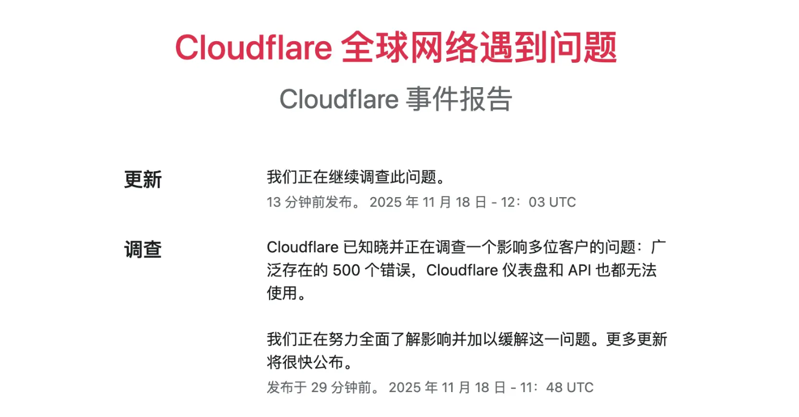
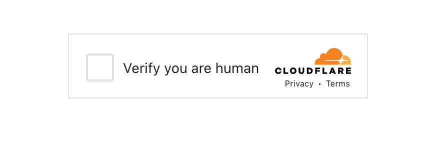

Cloudflare 是一个伟大公司！
11 月 18日发生了两件大事：第一件，谷歌发布了 Gemini 3 pro 模型，一举打败了 GPT 5.1和 Claude 4.5 Sonnet。我就说嘛，谷歌这么庞大的一家公司，人才济济，数据庞大，奖金雄厚，怎么可能永远甘居人后？要知道最早的用于 AI 的 Transformer（谷歌团队论文《Attention Is All You Need》）关键模型是人家谷歌开源出来，其他家后来才迅速跟上的。钱、人、数据，人家都没有短板，有此高光时刻早有所料。
第二件，就是伟大的 Cloudflare 公司，它的服务器在全球范围内大规模宕机了，出现了 500 错误。据说每分钟损失几亿元，一共宕机了 6 小时，保守估计损失了 500 亿人民币。已经得到确认的，金融经纪商们损失了 15.8 亿美金。了不得，现在这个世界，连接太紧密，一个部分停转几小时，就造成了十几亿美金的损失。特别对于占据全球 20% 安全流量的 Cloudflare 尤其如此。

宕机是怎么发生的？为什么它是一家伟大的公司？对我们写代码的有什么启示？接下来主要聊这些。
有人可能对 Cloudflare 这家公司不了解，不知道它是干什么的。可以将它理解为一家全球互联网安保公司，专门为网站或 App 提供安保服务的。具体服务内容比如出示个验证码，让你输入，还有识别和抵挡非授权高速数据抓取这些。这类服务程序实现起来不复杂，但它需要的特征库却是需要积累的。比如说，某黑客经常用他的服务器向外做恶意嗅探或攻击，一旦他的服务器被 Cloudflare 标识上，所有使用 Cloudflare 安保服务的网站都安全了。如果你要自己实现，那只有等他攻击你了，你才能获得防御能力。Cloudflare 就相当于全球互联网的安保网关，存储了可能全球最全的恶意程序信息特征。
你可能见过下面这张图，这是 Cloudflare 怀疑你是机器人，要求你进入生物验证流程了。

Cloudflare 的业务范围非常广泛，事实上目前 X（twitter）、ChatGPT、Shopify、Meta、亚马逊等企业都在购买和使用它的服务。
下面说一下这次事故爆发的原因。
灾难如何发生的
这次事故被称为 2025 全球最昂贵的配置失误，源于 18 日当天，Cloudflare 数据库工程师对线上系统进行了一次全球的最高权限的配置升级。工程师需要往线上推送最新的 1000 条防火墙规则——也可以理解为 1000 条犯人犯罪记录，不一定是 1000 条，这里只是形象比喻方便理解。他写一条 SQL语句：
SELECT r.rule_body, p.permission_setting
FROM firewall_rules AS r
JOIN permission_groups AS p
ON r.group_id = p.id;
这条语句的作用，就是将新规则从相关策略组中查询出来，稍后将打包、编译为二进制包，向线上广为推送。
许多数据库操作员，包括程序员，都有一个使用注释的习惯，对于 SQL 语句中暂时不需要的条件，会使用两个连字符（--）注释掉，于是这条 SQL 语句在线下测试环境可能就变成了：
SELECT r.rule_body, p.permission_setting
FROM firewall_rules AS r, permission_groups AS p
-- WHERE r.group_id = p.id;
程序员朋友不妨反省下，自己是不是也有这样的习惯。注释掉条件，目的就是为了下次使用时反注释掉方便。
没有了条件，这条 SQL 语句查询出来的结果变成了两个表（table）的笛卡尔乘积。原来只是 1000 条，二进制压缩后区区 5MB 的大小，现在可能变成了 5GB。
为什么要进行二进制压缩？这是为全球传输的的高效及安全考虑，这属于常规操作，Cloudflare 如果用明文JSON 文本传输就真是草台班子了。
得益于 Cloudflare 这家公司在全球拥有非常卓越的分发能力，区区 5GB 的大小，也被工程师在数秒内分发完毕了。如果是小破公司小破网格，半天分发不成功，工程师很快就会发现异常。因为网速太优秀，灾难在产生时被略过了。要不说 Cloudflare 是一家伟大的公司。
在全球的服务器节点，上面运行的是 Cloudflare 自己写的 Pingora程序。这是一个用 Rust 重写的 Nginx 程序，是一个反向代理程序。在此程序中有一段 Rust 代码负责接收控制中心发来的二进制配置包：
fn load_firewall_rules(payload: &[u8]) -> Config {
// 1. 接收二进制数据
// 2. 尝试反序列化 (使用 serde_json 库)
let config: Config = serde_json::from_slice(payload)
.unwrap(); // <--- 凶手就在这里！！！
return config;
}
凶手就在 Rust 语言的 unwrap 这里！这也是这两天 Rust 被喷的原因。
二进制配置包（Blob）已经被网络下载，放在了硬盘上，硬盘倒是够用。程序使用serde_json 库将 Blob 解析为 JSON 格式，为接下来的读取和使用做准备。serde_json 是一个知名的且被广泛使用的 Rust 库，它也支持大数据的读取，它是流式操作，它的瓶颈在于服务器的内存，不在于它自身。但因为 Cloudflare 给节点服务器分配的内存或给 Pingora 程序分配的内存不足，或者数据包太大超过了分配的内存，所以这里解析失败了，serde_json 返回的不是 Ok，而是 Err，开发人员在这里没有区别对待，相当然地以为一定是 Ok，使用了 unwrap操作。而 unwrap操作的语义是：
“我确认这里一定成功（Ok），如果这里出现错误（Err），别废话，直接抛出 panic 异常炸掉整个程序！”
这是这两天 Rust 被喷的原因。但其实不能怨 Rust，Rust 是冤的。早期 Rust 没有 unwrap，程序员抱怨写代码取个结果像剥笋子，一层一层剥，太麻烦；于是，Rust 更新了一个 unwrap 方法，尤其程序员认定返回的结果（Result）一定是 Ok(value) 值，直接开箱，将 value返回，这相当于其他语言直接返回结果，避免了 Rust 返回 Result 带来的负面效果。
经此一役，我相信 Rust 团队很快会出一条新规则：为了安全考虑，默认情况下程序员不能直接调用 unwrap，尤其在生产环境中.在 release 编译时禁止直接使用，除非程序员在编译时加一条 Allow_Unwrap=1这样的显式开关。我刚开始学习 Rust 语言时，就觉得这个 unwrap 方法太飘逸，不符合 Rust 严谨的作风，果然几年后有人因为它捅了篓子。
现在 Rust 没有更新，在生产环境中，我们一般怎么实现同样的逻辑呢：
fn load_firewall_rules(payload: &[u8]) -> Result<Config, ConfigError> {
// 1：先作常规检查，例如看一眼数据大小，太大了可能是黑客捣鬼，直接拒收
const MAX_CONFIG_SIZE: usize = 100 * 1024 * 1024; // 100MB
if payload.len() > MAX_CONFIG_SIZE {
// 记录日志，返回错误，而不是崩溃
error!("Config payload too large: {} bytes", payload.len());
return Err(ConfigError::PayloadTooLarge);
}
// 2：解析时使用 match 处理错误
match serde_json::from_slice(payload) {
Ok(config) => Ok(config),
Err(e) => {
// 即使解析失败，也只是这一次更新失败，放弃更新，节点还能用旧配置继续跑
error!("Failed to parse config: {}", e);
return Err(ConfigError::ParseError(e));
}
}
}
除了使用 match，正常对 Result 结果作 Ok、Err 模式匹配，分情况处理；还要在前面做一个常规检查，例如数据包 size 太大，则放弃更新，且向控制中心发出异常警告。这叫 Sanity Check，属于编程中的常规操作。
程序内三类错误及处理策略
接下来，我们扩展一下，说一下软件程序中都有哪些错误，分别怎么处理。
一、可预见的用户输入错误（User Input Error）。
这类错误永远不可信任，永远要怀疑用户也可能是一名黑客或一名十分刁钻的测试工程师，他在输入年龄时可能输入-1，在输入姓名时可能输入 Drop Database。对这类错误要耐心进行数据检验，不符合要求则软性拒绝，回退状态至输入前，允许用户再次输入。用户可能是黑客、测试工程师，也可能是一名笨蛋，输入检验要足够宽仁。
二、可能预见的网络下载或接口请求错误（Network Error）。
这类操作一般要限时，例如 30s，预知 size 大的限时还要延长。有时还要设置容量限制，例如将Content-Length 设置为 100MB，防止恶意 DDOS 攻击。在首次请求失败后，还要进行重试，但重试也不能一直重试，要有次数限制，在等待间隔上还要降级延时，例如第一次请求失败等待 1s，第二次等待 2 秒，第三次等待 4s。降级是指数级的，避免对目标服务器造成负担。如果不降级，所有拉取失败的机器同时重试拉取，甚至更频繁地拉取，很快就会被目标服务器拉爆；即使有多活，有灾备，有负载均衡也没用，雪崩式的流量很快会把所有节点拉爆。
为了避免雪崩式灾难，还要有熔断和降级。例如节点在尝试拉取 10 分钟后，不要再拉了，立马停止重试，并立即向控制中心报警，最高级别警告。然后节点进行降级使用，例如在上面的代码中，当解析出错时，放弃本次更新，记录日志，继续使用旧配置继续运行 Pingora 程序。
三、不可预见的系统或模块错误。
例如请求分配内存，在大多数时候不会发生，但并不是完全不可能。一个函数它有一个参数，它知道自己需要什么样的参数，它也做了编译期验证，只要参数不合规则，就抛出 panic 异常；问题是，调用它的函数，可能不知道它会抛异常，可能在测试时传送过来的参数都是正常的，但在个别非正常情况下，调用者函数也接收到了非法数据，它稀里糊涂地传了过来，这种错误是很难防范的。特别当我们使用了第三方类库时，我们很少会通读类库的代码，一般都是直接使用，这时候它里面有没有 panic，什么时候 panic，我们程序员也是不清楚的。
在 java 或 js 语言中，有一招 try catch 可以应对这类情况，对于不放心的第三方操作，用一个 try catch 包括起来，如果出错，按照错误的情况处理，这样可以保证程序一直是正常运行的。
在 Rust 语言中，也是有办法的，例如使用 catch_unwind：
use std::panic;
fn load_firewall_rules(payload: &[u8]) -> Config {
return serde_json::from_slice(payload).unwrap();
}
fn main() {
let result = panic::catch_unwind(|| { // catch_unwind 相当于 try
load_firewall_rules();
}); // 闭包中的代码相当于 try 块
// 处理 catch_unwind 的结果
match result { // 相当于 catch 块
Ok(_) => println!("操作成功！"),
Err(payload) => {
// 捕捉到了 panic，并处理它
println!("一个 Panic 被捕捉了，程序没有崩溃。原因: {:?}", payload);
// 可以在这里记录日志或返回 500 错误
}
}
// 程序继续运行，没有被终止
println!("主程序运行结束。");
}
这个 catch_unwind 就相当于其他语言的 try catch，如果 Cloudflare 对第三方类库（serde_json）操作不放心，在每个操作的外层加一个 catch_unwind，或许就能避免 500 亿的损失。
还有代码管理，也有问题。一般而言，为了工程安全，配置和代码是等同对待的——许多公司不是这样，代码纳入版本管理，但配置逍遥法外——Cloudflare 不是的，它的配置不在仓库内，没有版本控制，直接由工程师手动分发至全球，并且是最高权限的。可能也因为如此，这次灾难才能绕过灰色发布而成为全球灾难。我想说，如果将来 Cloudflare 接管了全银河系的安管服务，它是不是也敢一键分发至全银河系！
配置也是代码，一定要和代码等同视之，也要接受版本管理和权限控制。有人觉得，配置里好多私密信息，不能放在代码里，呵呵，看你刚学写程序，我不跟你计较。想做，方法有得是，但不做，原因只有一个，就是懒惰。
最后说一下这家公司为什么伟大。
Cloudflare 为什么伟大
我没有看到这家公司处理它的工程师。按照美国法律，员工在履行职务时造成的损失，责任主体是公司（Cloudflare），而不是个人。在美国，这位工程师可能面临被调岗或解雇，但不会被要求承担 500 亿的赔偿。我顺便查了一下，在中国不是这样，中国法律规定，员工给公司造成直接损失的，要赔给公司，员工没有钱，可以将工资的 20% 拿出来抵扣。但法律也有“人性”的一面，劳动法规定，扣除 20% 后，余下的 80% 不能低于当地最低工资水准。什么样数据库工程师，哪个厂子里的工程师，工资只比最低工资高 20%？想想可能还真有。所以，反观 Cloudflare，它是伟大的。
为什么 Cloudflare 伟大？它的工程师就是个草台班子，有可能技能是跟街上的业余编程爱好培训班学习的，直接拿 demo 里的 unwrap 用在生产环境/企业环境里；它的工程管理方式老旧及土，中国 10 年前都不是这样的工程管理模式了；它的控制中心连个预警机制都没有，一个配置文件大了十几上百倍都没有人发现异常……但，又能怎么样，人家的员工在给公司百亿损失后，不用承担赔偿，人家团队在事故发生后，也是可以一直坐在会议室彻夜找 bug 的，没有埋怨，没有人打小报告，只有集中力量尽快解决问题，所以，Cloudflare 是伟大的。
反观中国，仅是赔偿 20%，我想都足够让程序员心生防备。程序员心想：要使用最合理的架构吗？不，那样太麻烦，代码能跑上线就行，下个月我在不在这家公司还不一定；要用心写最漂亮的代码吗？不，写得再漂亮老板也看不懂，老板要的只是尽快上线尽快挣钱，明天公司在不在还不一定；要不要进行创新呢？创新个头啊，创新伴随着风险，风险意味着损失，损失算在自己身上要扣工资的，还是老老实实写别人写过的代码，用别人用过的方案。
还有，像论文。最近看过一个视频段子。视频中导师说：小伙子你不要较真，你要认清现实。小伙子说：难道我付出的 200 多个日夜就白废了吗，为什么我的研究成果第一作者要署上别人的名字？导师说：小伙子，这就是现实，等你混到导师你就懂了。结果，论文越发越多，也越来越水。如果注定成果要与别人共享，自己为什么要那么努力？
如果多努力一点，多承担一些风险，面临的是工资被扣除，谁还会勇敢直前？
公平，最重要。如果公司让员工为失误承担责任，那么没有人敢再碰核心代码；一旦出错，员工也会想尽办法隐藏错误，直到公司倒闭无法挽回。规定给公司带来损失的员工要承担赔偿责任，表面看起来可以促进员工爱岗敬业，实则恰恰相反。
还有项目的成败，要员工为项目的失败买单，把项目组解散，把成员开除，这和让员工承担经济损失是一样的，都是一样的小气和龌龊。
经此一役，我相信 Cloudflare 会越来越好，线上的 Pingora 程序会被完善，配置分发策略会被完善，控制中心报警机制会被完善，还有最重要的，它的流氓特征库依然是全球最完备的，Cloudflare 仍然是一家伟大的公司。而不能伟大的公司，注定永远不可能伟大。有些小公司原来在购买和使用 Cloudflare 的服务，看人家出事了，就要撕坏合同，甚至换一家安保服务公司；没有必要，你没看到人家的全球快速分发能力吗？几 GB 的大文件也是嗖的一下完成了，有这个实力的并不多。还有，人家能在 6 小时内定位并解决问题，换一家同样体量的公司未必做得到呢。
Cloudflare 是伟大的，还会继续伟大。我们的 Cloudflare 在哪里，何以诞生？
11 月 20 日
该文由 rustpress 编译。